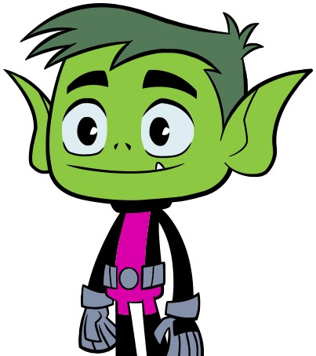

Início
Eu sou o Mutano, o membro mais engraçado dos Jovens Titãs. Ganhei meus poderes quando fui mordido por um dos macacos que me transferiu uma doença grave chamada Sakutia. Meus pais testaram um novo soro em mim na esperança de me salvar. Esse soro acabou modificando meu dna. E foi assim que eu me tornei um dos Titãs mais fortes.